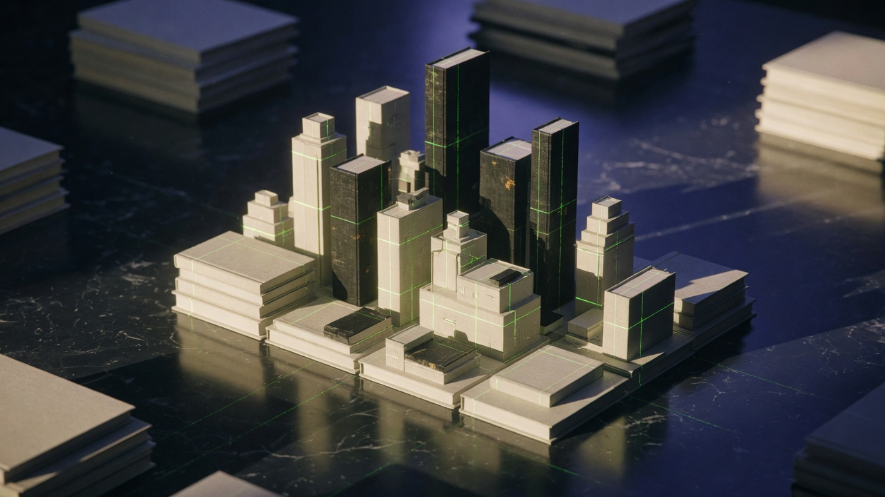

LNPortfolio · 2026Remote · Antipolo
Technology Manager · Digital Mavericks
Lorenzo
Nonoy
I design the systems that turn offers into revenue machines media and sales can actually run.
CRM. Webinars. Email and SMS. Attribution. Conversational AI. One operator from first click through close.
49n8n workflows in a live client stack
243CRM fields, click to close
20+live funnel routes and tracking links
7offer tracks, free tool to partner
renzononoy@gmail.com
linkedin.com/in/lorenzocn
+63 920 477 8202
digitalmavericks.github.io/lorenzo-nonoy-portfolio
LNSelected workClient brands at Digital Mavericks
Selected work
Funnels with a spine.
01 / Case · 2024 – Present · Publish & Prosper
End-to-end revenue funnel for an AI publishing offer.
One CRM. Many entry points. A free tool and cheatsheet into a masterclass and VSL/cart, then a high-ticket partner suite, JV program, and multi-day challenge.
GoHighLeveln8nStealthSeminarVercel

02 / Case · 2026 · AI Operator HQ
Four-path book-trilogy funnel you can actually read in the CRM.
Premium, downsell, high-ticket apply, and control. Path-based tagging so tests do not collapse into a single registered blob.
Funnel architecturePath taggingGHL SaaS
03 / Case · Operating system · Multi-brand
Webinar-to-CRM that matches follow-up to watch behavior.
Registrants, attendees, time-based zones, CTA clickers, no-shows. Conversation AI and voice so hot leads do not sit in a tag.
Attendance zonesUTM architectureLayla / Retell

LNSystemsHow the work runs
How I work
The offer is not the system.
SYS / 01
Data that survives.
UTMs, landing-page URL, join and replay links, and engagement scoring stay intact from first click through close.
SYS / 02
Watch behavior, not just showed up.
Time-based attendance zones and CTA tags so follow-up matches what someone actually watched.
SYS / 03
Mail that lands.
Sending-domain DNS and DMARC, mailbox warmup, and immediate-send automations for openers and clickers.
SYS / 04
AI that has a job.
Conversation AI and voice with tags, pipelines, payment links, and objection logging.
Publish & Prosper · offer ladder
Free tool to partner suite.
01 KDP Keywords Genius
02 AI Book Cheat Sheet
03 AML masterclass
04 VSL / cart
05 APPS partner suite
06 JV / affiliate
07 Multi-day challenge
Stack
CRM & funnelsGoHighLevelStealthSeminarVercelVidalyticsHTML/CSS landing pages
Automationn8nZapierWebhooksUTM architectureTag taxonomies
AI & voiceConversation AIRetellSMS / email follow-upKnowledge-base ops
DeliverabilityWarmySMTP / MailgunDMARC / DNSKitKlaviyo
LNExperienceSame method, different stack
Experience
Where the systems were built.
Jun 2024 – Present
Technology Manager
Digital Mavericks Media · Remote
- Own marketing technology across multiple client brands: funnels, CRM, webinars, email/SMS, attribution, and AI follow-up.
- Build webinar-to-CRM automation in n8n and GoHighLevel with attendance-zone tags, CTA click tags, and no-show recovery.
- Design CRM data models so UTMs, landing-page URL, join/replay links, and engagement scoring survive from first click through close.
Oct 2023 – Mar 2024
Campaign Manager & Technology Specialist
PrimeSync Solutions
- Planned and ran digital campaigns end to end, and implemented the marketing-technology layer so launches did not wait on IT.
2018 – 2024
Lead Generation
Mojo Global · United States (Remote)
- LinkedIn-first lead generation for US clients, plus automated follow-up sales teams could work.
Oct 2007 – Apr 2017
Senior Learning Specialist
TELUS International
- Owned customer-service and sales training for national and international contact-center agents.
Education
Bachelor of Secondary Education
University of the Philippines · 2003 – 2007
Certifications: Applied Coaching System · Trainer Development · Lean Six Sigma Yellow Belt · Contact Centre Management
Contact
If the funnel is leaking, let’s find the hole.
renzononoy@gmail.com · linkedin.com/in/lorenzocn · +63 920 477 8202
https://digitalmavericks.github.io/lorenzo-nonoy-portfolio/